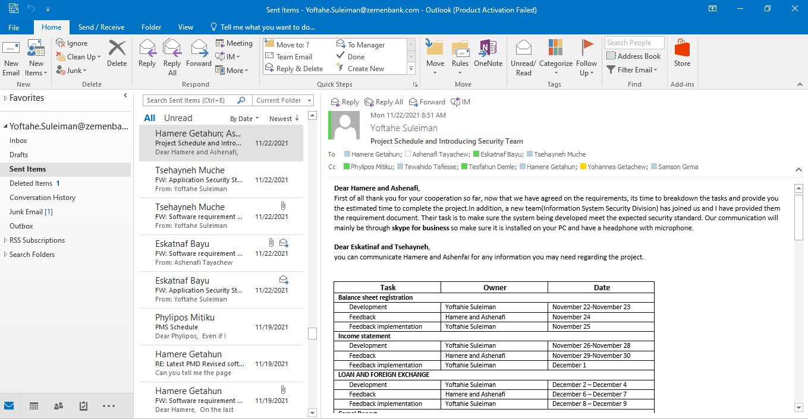

Performance Management
My role in this project is collect and analyze requirement break down the tasks and prepare project schedule as shown in the email picture attached with this project, design and develop the application, test the developed application. I am the full-stack developer of this project.
I communicate with the clients at every delivery of a feature and when there is unclear requirement. They test each feature developed and give feedback on the schedule prepared at the start of the project.
This system analyzes the performance of the bank across different quarters and years and generates several reports. It also compares the performance of the bank with other banks' performance. It has two parts input and outputInput
Industry DataAn input data set that is used to record commercial banks quarterly financial and non-financial performance.
Zemen Bank Balance Sheet Items
An input data set that is used to record Zemen bank’s quarterly actual balance sheet items performance with specified plan and strategy.
Zemen Bank Statement Of Profit Or Loss And Other Comprehensive Income Items
An input data set that is used to record Zemen bank’s quarterly actual profit or loss accounts performance with specified plan and strategy.
Zemen's Other Non-Financial Items
An input data set that is used to record Zemen bank’s quarterly actual non-financial performance i.e. no of ; Accounts, branches, staff, ATM,POS,Card holders ,internet banking users etc. with specified plan and strategy.
Zemen Bank Loan And Advance
An input data set that is used to record Zemen bank’s quarterly actual loan and advance with its categories (Lone by tenure, product, economic sector and by probability of default) performance with specified plan and strategy.
Zemen Bank Foreign Exchange
An input data set that is used to record Zemen bank’s quarterly foreign exchange inflow (by currency type and source of inflow) performance with specified plan and strategy.
Out put
Camel ReportAn output window that measure Zemen bank’s quarterly, semiannual and annual financial performance against six parameters namely capital adequacy, asset quality, management capability, earning ability, liquidity and sensitivity to market.
Balance sheet performance comparison table
An output window that compares Zemen bank’s actual balance sheet items performance against plan, strategy, previous quarter and last year same period.
Statement of profit or loss and other comprehensive income items performance comparison table
An output window that compares Zemen bank’s actual profit or loss accounts performance against plan, strategy, previous quarter and last year same period.
Loan and advance performance comparison table
An output window that compares Zemen bank’s actual Loan and advance performance against plan, strategy, previous quarter and last year same period.
Foreign exchange inflow comparison table
An output window that compares Zemen bank’s actual foreign exchange inflow performance against plan, strategy, previous quarter and last year same period
Summary of the banking industry performance trend and market share
An output window that summarize the performance (Deposit, Loan, Gross profit, Total asset, Paid-up capital and Branches )of the banking industry, public bank, private bank ,peer bank and Zemen bank performance against previous quarter and last year same period and measure their market share
Deposit Market Share
An output window that displays all commercial banks deposit percentage share against the total deposit of the industry in three periods (current quarter, previous quarter and same period last year) and make rank for each bank based on their share . In addition, it compares absolute and percentage change of the current quarter result against previous quarter and same period last year record and generate rank for each banks for both changes.
Loan Market Share
An output window that displays all commercial banks loan percentage share against the total loan of the industry in three periods (current quarter, previous quarter and same period last year) and make rank for each bank based on their share . In addition, it compares absolute and percentage change of the current quarter result against previous quarter and same period last year record and generate rank for each banks for both changes.
Gross Profit Market Share
An output window that displays all commercial banks gross profit percentage share against the total gross profit of the industry in three periods (current quarter, previous quarter and same period last year) and make rank for each bank based on their share . In addition, it compares absolute and percentage change of the current quarter result against previous quarter and same period last year record and generate rank for each banks for both changes.
Total Asset Market Share
An output window that displays all commercial banks asset percentage share against the total asset of the industry in three periods (current quarter, previous quarter and same period last year) and make rank for each bank based on their share . In addition, it compares absolute and percentage change of the current quarter result against previous quarter and same period last year record and generate rank for each banks for both changes.
Total Capital Share
An output window that displays all commercial banks capital percentage share against the total capital of the industry in three periods (current quarter, previous quarter and same period last year) and make rank for each bank based on their share . In addition, it compares absolute and percentage change of the current quarter result against previous quarter and same period last year record and generate rank for each banks for both changes.
Total Paid up Capital Share
An output window that displays all commercial banks paid up capital percentage share against the total paid up capital of the industry in three periods (current quarter, previous quarter and same period last year) and make rank for each bank based on their share . In addition, it compares absolute and percentage change of the current quarter result against previous quarter and same period last year record and generate rank for each banks for both changes.
Deposit Structure In Percentage
An output window that shows all commercial banks deposit structure(demand, saving and time deposits) in three periods (current quarter, previous quarter and same period last year) and compares current quarter result percentage change against previous quarter and same period last year record for each deposit structures.
Snap Shoots
It is a quick display of major financial and non-financial accounts performance of the bank against the plan and strategy with in periods.

Human Resource Information System
Click here to read the user manual for detailed features of the system.
is a system developed to human resource department to automate human resource tasks such as bio data registration, recruitment process, training &
development management, performance management, survey management and man-power planning. It allows
human resource officers, to register bio-data of
employees, manage benefit package of positions, post new vacancies, screen applicants, generate
screened candidates’ profile and recommend winner candidates,manage trainings and folow-ups...
It has modules like:
Biodata management module
a subsystem used to record and manage the staffs' data. It has sub forms like account detail,address,educatiion,certification,employment history.Training management module
a subsystem used to manage trainings, programs and scholarships given to staffs. It allows to allocate and breakdown budgets for various training types in a given fiscal year. It also records attendance of the trainees, grade they received for the training and feedbacks given for the trainers. It manages programs which has phases like YGTP(Young graduate trainee program).Also when staffs terminate it checks out if they have any commitment based on the training or scholarships they have taken and converts the remaining commitment date into money if they want to pay and leave the company.It also has an online library where staffs can read online read only documents or download other documents.Recruitement management module
A subsystem to manage recruitment process staffs will be notified of vacancy announcements on the system. And can apply and follow-up their application status on the system. While HR staffs get various reports from the system to select the best candidate for the position.Performance management module
a subsystem to manage performance of the staffs to award them annual increment and bonus.Import Portal
Click here to read the user manual for detailed features of the system.
It is a system developed to international banking department(IBD) to automate purchase order and margin facility related data management in our international banking department. It allows IBD officers, to register purchase order, cash against document, margin facility,
L/C issuances & outstanding advances against import bills as well as generate several reports based on
these registered data. Moreover, it sends 13 types of notification email to users regarding the registered
purchase order and margin facility data.
This system has two main sub systems:
Purchase Order
Users can manage purchase order and cash against document data.Margin facility
users can manage margin facility, L/C issuances and outstanding advances data.There is also a Report section from which users can generate several types of reports based on several filter criteria from the registered purchase order and margin facility data. This system is a secured system that requires users to have authorized credentials in order to manipulate or view data. There are three types of accounts to use this system.
MasterMaker : Is an IBD account with privilege to register, view, edit and delete margin facility related data. This account can also view purchase order related data. Moreover, this account can authorize or discard new users.
Maker : Is an IBD account with privilege to register, view, edit and delete purchase order related data. This account can also register and view margin facility related data.
Viewer : Is a credit department account with only view privilege.